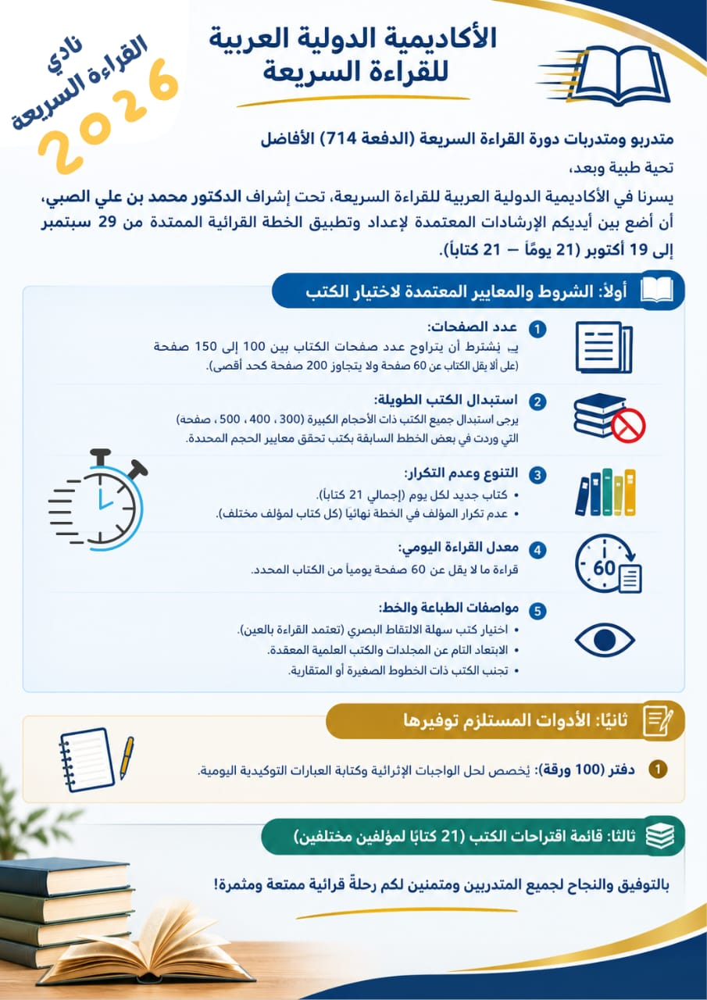

دفتر 100 ورقة
خصّصه لحل الواجبات الإثرائية وكتابة العبارات التوكيدية اليومية.
رحلة منظمة لواحد وعشرين يومًا من القراءة المركّزة.
خصّصه لحل الواجبات الإثرائية وكتابة العبارات التوكيدية اليومية.
اختر كتابًا جديدًا لمؤلف مختلف لكل يوم.
وزّع الكتب على الأيام المحددة، وسجّل عنوان الكتاب ومؤلفه وعدد صفحاته.
للسعوديين والمقيمين: احرص على الانضمام إلى نادي القراءة على منصة هاوي.
21 كتابًا لـ21 مؤلفًا؛ لا تكرّر المؤلف خلال الخطة.
اختر خطوطًا واضحة ومتباعدة، وابتعد عن الخطوط الصغيرة والمتقاربة.
ابتعد عن المجلدات والكتب العلمية المعقّدة، واستبدل الكتب ذات 300 أو 400 أو 500 صفحة.
هناك كتب في مكتبتك ربما لم تقرأها… امسح الغبار عنها، وأدرجها في خطتك.
استمع إلى التسجيل عند تجهيز قائمة كتبك.
تحميل التسجيل الصوتي ↓
جهّز الدفتر والكتب، واكتب خطتك القرائية. استثمر فترة الاستعداد في زيادة الجلسات الإلكترونية.
احضر اللقاءين واستعد لبدء التطبيقات.
ابدأ بالكتاب المخصّص لهذا اليوم. اقرأ 60 صفحة على الأقل، ثم سجّل عدد الصفحات في خانة الإنجاز.
أكمل اليوم الحادي والعشرين، ثم اجمع صفحات الإنجاز اليومية في خانة المجموع.
النموذج فارغ لأسماء الكتب والمؤلفين، ومجهّز بالتواريخ من 29 سبتمبر إلى 19 أكتوبر، مع خانة لمجموع الصفحات المقروءة.
لكل تاريخ كتاب محدد ومؤلف مختلف.
اكتب عدد الصفحات التي قرأتها فعليًا في ذلك اليوم.
اكتب إجمالي إنجاز الأيام الـ21 في سطر المجموع.
انتقل إلى كتاب اليوم التالي والتزم بالجدول، مع تعويض القراءة التي فاتتك.
اقرأ بسرعة، لا تطلب الفهم، أوقف الصوت الداخلي وحركة الشفتين، لا تتراجع بعينيك للخلف، واستخدم الإصبع لتسريع القراءة.
يمكنك العودة إلى أي شريحة من القائمة الجانبية وقتما أردت.
العودة إلى البداية ↑{kind=link}